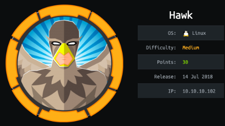

Linux Boxes
hawk
nmapAuto
vuln scan
udp scan
recon
http:80, 8082 & 9092
ftp
drupal.txt.enc
bruteforce-salted-openssl
dropal.txt.enc contents
initial foothold
dropal login
droopescan
enable php module
php reverse shell
php system RCE
priv esc
LinEnum.sh
easy way (45506.py)
ippsec way
find resused password in /var/www/html settings.php file
ssh to port 8082 locally with daniel user
H2 exploit
logging in with arbitrary database name
RCE
rev shell
user/root
lessons learned
hawk
